Group Members: Matthew Zegar, Larren Canapi, TJ Le, Mohammad Raad Sarar, Khanh Nam Tang, Varpreet Dhaliwal

Chip8 is an interpreted low-level programming language which runs programs like video games on 8-bit computers used heavily in the 1970’s. Our team was tasked to create a Chip8 emulator and visualizer that can run and display Chip8 programs on any modern web browser using Javascript in our SFU class, CMPT 276 (Spring 2019, Surrey). In addition, creating a software tool that would be helpful for a Chip8 developers and create at least two video games for our virtual machine.
In the emulator page, users can load/run Chip8 programs in our emulator, and with the advanced visualizer features, pause or restart the emulator. In addition, to stepping forward or back one instruction at a time in a running program while being able to see the memory, registers and instructions being executed. The emulator’s speed can be set from a range 1 millisecond to INT_MAX, we recommend setting it to 1 to 30 for maximum performance. Recommended to run the emulator in Google Chrome.
The Chip8 tool is a sprite editor allowing developers to create their own sprites for their own Chip8 programming. The tool can create 8x15 sized sprites and is done by pressing which pixels the user wants to fill in. There is an option to clear the tool workspace completely so the user can create another sprite, or the user can click on an already pressed pixel to remove it. The tool in real time will display the corresponding hexadecimal values to the user from which they can copy and paste it into their Chip8 programs that they are coding.
Finally, the Chip8 games we created are Pong and our own twist on Space Invaders. Pong can be played up to 2 players and plays the original arcade game. Player 1 is on the left and is controlled by using the "q" and "a" key to move up and down respectively. Player 2 is on the right and is controlled by using the "e" and "d" keys to move up and down respectively. Space Invaders has the user shoot down a big alien with a limited amount of shots. Press the “w” key to shoot a projectile.